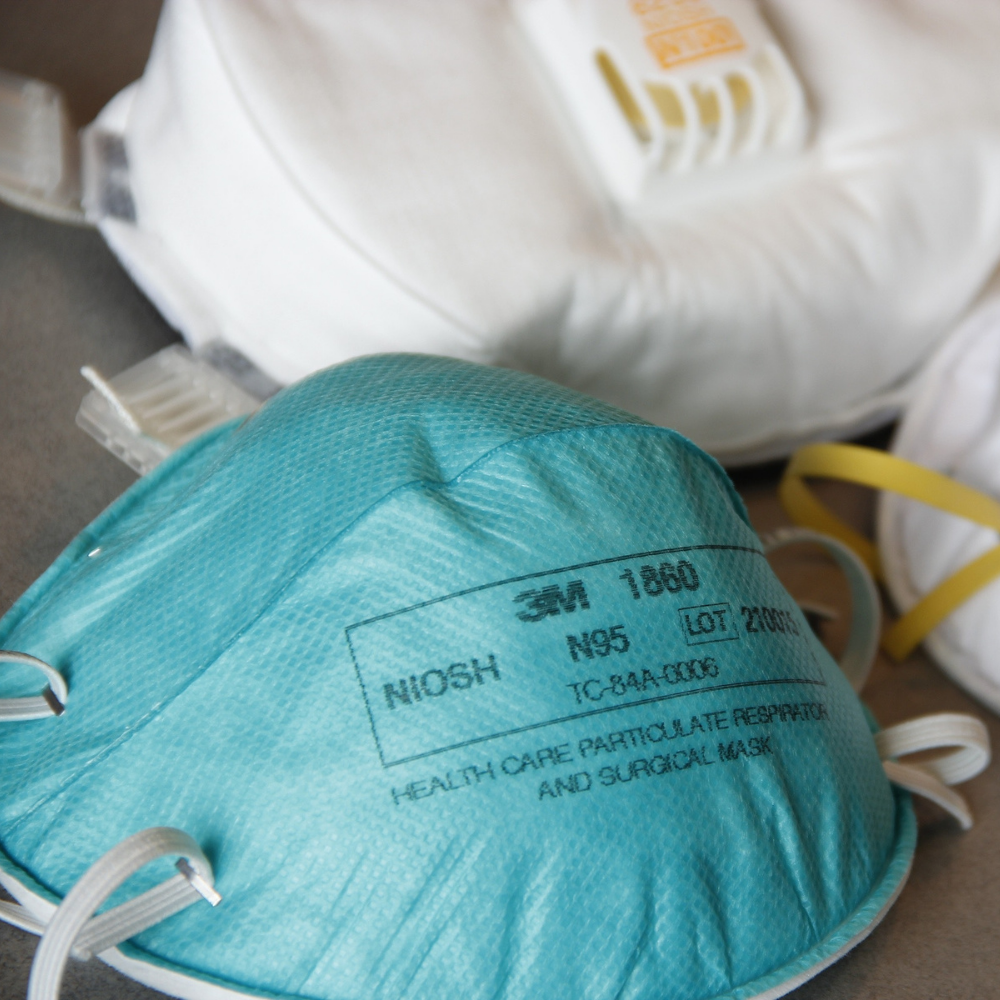

To the left, you can see an image of a surgical mask. These are one of the most common masks
worn by
people, especially in the Philippines. They provide sufficient protection if worn properly.
Protection while wearing these masks can be improved if the wearer wears more than one mask and
wears many layers of protection. Additionally, these masks are one of the preferred masks of
surgeons and medical professionals for civilians to wear.
Moving on, we see pictures of cloth masks. These masks can protect you from COVID 19, but there
are
some consideration that you need to make when choosing to wear a cloth mask. These
considerations
include making sure the mask has two layers of fabric, ensuring a tight fit on your face, and
using
a suitable mask material.

Moving on, we now look at N95 masks. These types of masks provide great protection. However,
these are not recommended for use by regular civilians. According to the CDC,
these masks should be prioritized for the use of medical professionals, especially if the mask
is labelled 'surgical N95'.
According to the CDC, face shields alone are not recommended as a replacement for masks They
have very large gaps and let a lot of outside air in. This is to be expected, as they are
primarily meant for protection of the eyes and face. However, they still have their uses during
this pandemic. They can especially be used as an addition to masks or for people who have
medical issues that make wearing masks hard.